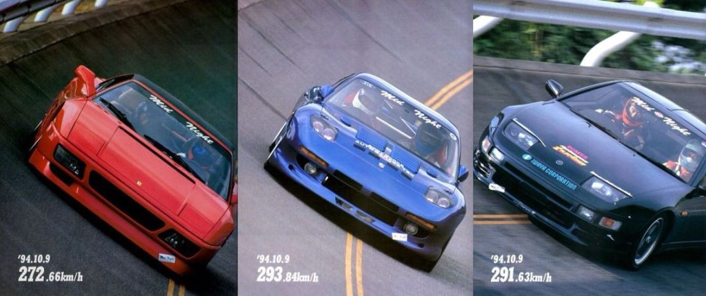
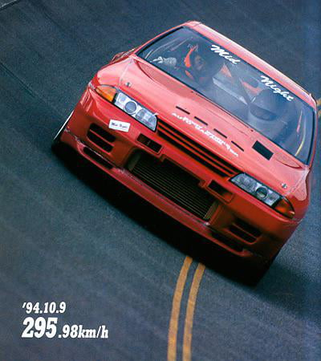

a pesar de que todos los coches eran rapidos habia unos que nunca fueron atrapados por la policia
Nunca en sus casi dos décadas de historia, un miembro del Midnight Club fue detenido por las autoridades.
Los coches deportivos que conducían estaban completamente fuera de alcance de la policía,
y el conocimiento de las rutas y carreteras de la Wangan por parte de los corredores era extremo.

Entre sus decenas de miembros al final de la vida del club,
destacaron coches como el Nissan 300 ZX Z32, los Nissan Skyline GT-R, Mazda RX-7, Toyota Supra o automóviles europeos como los Porsche 911 o un Ferrari Testarossa.
